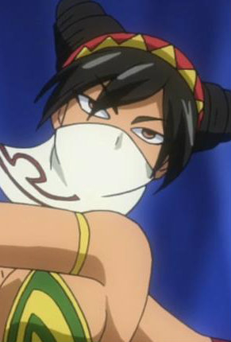
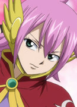
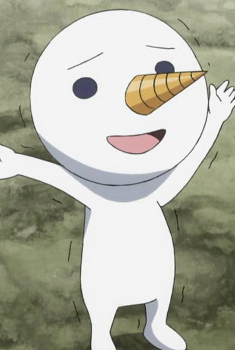

|
Eclipse Libra |
|
Eclispe Libra is the Eclipse form of Celestial Spirit Libra. Her true desire is to grant the rogue Celestial King more power by stealing life force from the 12 Zodiac Spirit. |
|  |
Libra |
- Fairy Tail
- Fairy Tail (2014)
|
Libra is a celestial spirit that is one of the 12 Golden Zodiac Keys. She uess Gravity Change Magic. She is a quiet spirit. |
|  |
Meredy |
- Fairy Tail
- Fairy Tail (2014)
|
Meredy is a member of Grimoire Heart and one of the Seven Kin of the Purgatory. She considers Ultear to be her mother. Meredy can be stoic, mature, calm and emotionless, but childish sometimes. |
 |
Nao Sadatsuka |
- Food Wars!
- Food Wars! The Second Plate
- Food Wars! The Third Plate
|
Nao Sadatsuka is a 92nd Tootsuki Generation student of Tootsuki Culinary Academy. Nao holds a deep harboring affection toward Erina Nakiri, as a girl who has strong obsession. |
|  |
Plue |
- Fairy Tail
- Fairy Tail OVA
- Fairy Tail x Rave Master
- Fairy Tail (2014)
|
Plue or Nikora is a Silver Key Celestial Spirit. He doesn't have combat abilities. He often kept as a pet by Lucy Heartfilia. He and Happy are great friends. |